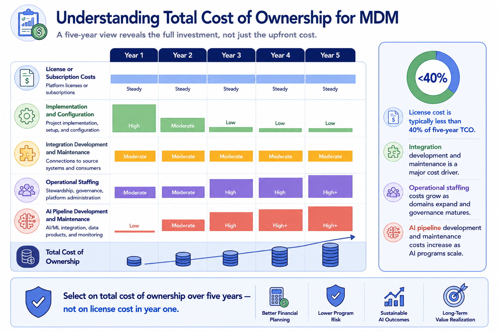
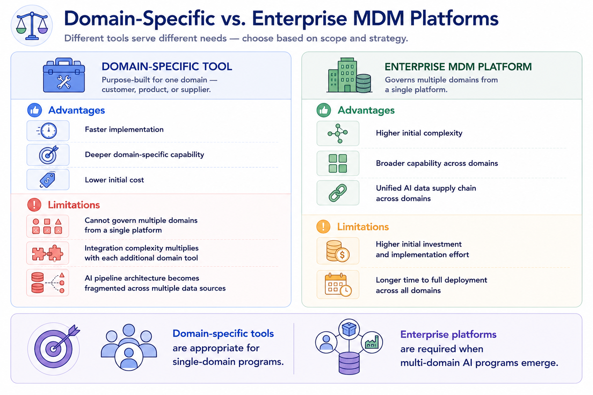

Selecting the Right Solution
Module support notes
Total Cost of Ownership in MDM Solution Selection
Total cost of ownership calculations for MDM solutions consistently reveal that license or subscription costs represent a minority of the five-year investment. Integration development — connecting source systems to the MDM platform and governed data to downstream consumers — is typically the largest single cost category in the first two years. Ongoing operational costs — stewardship staffing, governance program management, platform administration — are the largest category in years three through five.
AI pipeline development and maintenance costs are growing rapidly as a TCO component and are frequently underestimated in initial selection analyses because they are incurred as the AI program scales rather than at implementation time. Organizations that evaluate MDM solutions on license cost alone systematically underestimate the true investment and make selection decisions that optimize for the wrong variable.
Warning
License cost is typically less than 40% of five-year TCO. Select on total cost of ownership over five years — not on license cost in year one. Integration, staffing, and AI pipeline costs dominate the multi-year picture, and a platform that appears cheaper on license can easily become the most expensive option once the full TCO is modeled.

Domain-Specific MDM Solutions vs. Enterprise Platforms
The choice between domain-specific MDM tools and enterprise MDM platforms is one of the most common architecture decisions organizations face — and one where the right answer depends heavily on the organization's AI program ambitions. A domain-specific tool can be implemented quickly and delivers deep domain-specific capability at lower initial cost. But when AI programs begin referencing multiple entity types, the fragmented data supply chain that results from multiple domain-specific tools becomes a significant governance and integration burden.
Organizations that anticipate multi-domain AI programs within two to three years should evaluate enterprise MDM platforms capable of governing multiple domains from a unified architecture, rather than building a portfolio of single-domain tools that will require significant integration work to serve cross-domain AI use cases.
Note
Domain-specific tools are appropriate for single-domain programs. Enterprise platforms are required when multi-domain AI programs emerge. A customer churn model that also references product purchase history and supplier fulfillment performance cannot be well-served by three separate domain tools — it needs a unified MDM architecture that can govern all three domains and deliver them through a single, coherent AI data supply chain.

Implementation Partner Selection
The implementation partner selection for an MDM program is a consequential decision that receives less attention than platform selection in most organizations. The partner is responsible not just for technical implementation but for governance program design, stakeholder engagement, data migration quality, and increasingly, AI pipeline integration.
A technically capable implementation partner who lacks AI integration experience will deliver an MDM platform that is well-configured for operational use but poorly connected to the AI programs it is meant to support. Evaluating implementation partners against AI integration capability — asking specifically for reference implementations where MDM was connected to AI training pipelines, feature stores, or real-time AI inference services — has become a necessary step in partner selection for organizations with active AI programs.
Tip
Assess implementation partners against four criteria: MDM platform expertise, domain knowledge, AI integration capability, and governance program design. An implementation partner's AI integration experience is now as important as their MDM platform certification — ask for specific reference implementations where MDM was connected to AI training pipelines or feature stores, not just traditional analytics integrations.

A structured selection process is not slower than an intuitive one — it is more defensible, more accurate, and far less likely to produce a decision that needs to be revisited.
![A six-stage solution selection flow: Stage 1 — Define Requirements covering business goals, domain priorities, and AI readiness needs; Stage 2 — Assess Current State covering technology landscape and team capability; Stage 3 — Establish Criteria covering mandatory, preferred, and AI-specific requirements; Stage 4 — Evaluate Options through RFI, demonstrations, and reference checks; Stage 5 — Proof of Concept with real data and AI pipeline testing; Stage 6 — Decide by scoring against criteria, assessing TCO, and selecting.](../assets/m5-selection-summary.png)